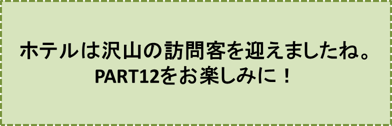

三郎と幸福のホテル-PART11-
『ホテル訪問客』の巻
笠原正雄
ホテルの宿泊代を少し下げてみましたが、宿泊客はばったり来なくなったままです。
三郎は頭を抱え、ふうっと大きなため息をついて考え込みます。
“この町の連中は、“ホテルの宿泊代を下げた”と言っても、素知らぬ顔をしている。この町にやって来る人達は、この私のホテルは、とても高いという評判を聞いて、別のホテルに泊るのだろうなぁ……”
そんな思いにふけりながら、長椅子に座って退屈そうに空を仰いだり、町の建物を眺めたりしている正にその時でした。町を埋め尽くす程の大勢の人達が、大通りをホテルに向かって歩いて来るのが目に入ったのです。
皆が皆、堂々と胸を張って歩いて来ます。太陽の光を真正面から受けて、彼等は光り輝いているように見えます。
誰もが誇りに満ちた態度であり、下を向いて歩いているような人は、唯の一人も見当たりません。三郎は感嘆の声をあげます。
“ああ、凄い！ この人達は、私のホテルに用があるに違いない！真っ直ぐ、こちらに向かって歩いて来るのだから”
“それにしても彼らは、何と力強く何と堂々と行進して来ることだろう。この行進の前には、町の全ての建物が小さく見えてしまう”
人々がホテルに更に近づきました。三郎は大急ぎに急いで階段を駆けおりホテルの入口に立ちます。
人々の行進は町の大きな建物を遥かに圧倒しながら、益々近づいてきます。
皆、にこにこ笑っています。
彼らの顔一つ一つが太陽の光をあびて、健康そうな色に輝いています。
……しかし、行進が目の前に近づいてきた時、三郎は顔色を変えて叫びます。誰かに言い聞かせるように大声で叫びます。
「こっ、これは違う！ この人達は、私のホテルに泊りに来る人達ではない。違う！ 違う！ 大いに違うとも！ 私のホテルに来る人は、一流の人達ばっかりなんだぞ。皆が皆、紳士淑女なんだ」
「だが、この人達はどうだろう？ 全くの普通の人だ。普段着のままの人、作業服の人もいる。猟師さんもいる。コックさんや散髪屋さんらしい人もいる。おお、割烹(かっぽう)着姿の人達、制服のままの巡査さん、それに学生服の人もいるではないか！ これは一体どういう人達の集りなんだろう。私のホテルに泊りに来るに相応(ふさわ)しい身なりの人は、ほんの二、三人しか見当たらない」
人々はホテルの前で立ち止まりました。一行の中から、日に焼けた逞しいスポーツ選手風の男が野球帽のような帽子を脱いで、にこやかに三郎に話しかけます。
「貴方はこのホテルの受付の方ですか？ 我々を今日泊めていただけないでしょうか」
三郎はむっとして答えました。
「なんだって？！ 君達は、たったの一人であってもこのホテルに泊ることは出来ないぞ！ こんなに大きくこんなに立派なホテルには、気の毒だけれど、君達には泊る資格がない。全くない！
ここに泊りに来る人は、皆、超一流の人達ばかりなのさ」
三郎は大きく胸を張って誇らしげに続けます。
「……というのもこのホテルは、この町一番の立派なホテルで、私はその経営者なんだが、少なくとも私が経営を始めてからは、君達のような普段着のまま、仕事着のままの人は泊りに来なかったのだ。
……そして今後とも、君達のような身なりの人に泊まってもらうつもりは全くない。申し訳ないけれど……」
男は少しも腹を立てず、落ちついた口調で口を開きます。
「我々にはどんなに高い宿泊代でも出す用意がありますよ」
三郎はこの言葉に即座に三本の指を示して言い放ちます。
「一人について三万タールだぞ！ どうだ驚いたろう」
しかし男は、口元に微笑すら浮かべて答えます。
「結構ですよ。でも我々はこんなに大勢ですが、このホテルに入り切れるでしょうか」
三万タールの宿泊代の提示にも、男が少しも顔色を変えなかったのに三郎は驚き、またもし、こんなに大勢の人達が一人につき三万タールずつ置いていったら、一体どんなに沢山のお金になるのだろうかと、心の中で小躍りしました。
三郎は顔をほころばせながら口を開きます。
「貴方方がどんなに大勢であっても、部屋は貴方方の人数以上に沢山に準備されています。経営者たる私にもどれだけの部屋があるのか、見当もつかないほどなのです。部屋が無数にあって、行けども行けども部屋が尽きてしまう、といったことは決してないのですから」
スポーツマン風の男はどうやら安心したようでした。
三郎は、ホテルの前に集った人達をどう呼べばよいのか、またどういう目的で旅をしているのか、尋ねてみたくなりました。
三郎が問い掛けると、男は一層大きく胸を張り誇らしげに答えます。
「我々は“つまらぬ奴”と申します。私達はどこへ行っても、こう名乗っています」
三郎は驚き、叫ぶようにして口を開きます。
「なんだって！ 君達は“つまらぬ奴”だって！ 以前にもそういった人に会いましたよ。幸せになる方法を、私に教えてくれたのです。中背の気品のあるおじいさんでした。貴方方は、ご存じないでしょうか？」
「さあね、でもその人は我々の仲間に違いありませんね」
「ご老人の教えてくれた方法は、実に思いもよらぬ方法でした。“嫌な奴”、“つまらぬ奴”と思う女と結婚しろ、と言うのです。もしその通りにやれば、素晴らしい幸福が訪れると言うのです」
「我々の仲間なら、そういうことも言うでしょう。で、貴方はその通りやりましたか？」
「いいえ、幸福になる機会は、三度与えられたのですが、三度とも失敗してしまいました。自分の感情に圧倒され、“お前ほど嫌な奴はないない！”と言ってしまってから、はっと老人の言葉を思い出す始末でした」
「けれど、もう一度その機会が与えられたら、今度こそ実行できるように思い、是非この機会をもう一度与えて欲しい、と願っているのです。君達の中に、私が以前に会った“つまらぬ奴”が、いらっしゃらないかなぁ……」
三郎のこの言葉に、男は満面の笑みを浮かべて笑いました。人々も一緒に笑います。男はたくましい両腕を大きく広げて、三郎に語りかけます。
「我々“つまらぬ奴”が、三度と言えば、四度でもってことですよ」
すると全員が、その通り、繰り返します。
「我々“つまらぬ奴”が、三度と言えば、四度もということさ！」
この言葉に、三郎は夢かと喜びます。
「なるほど、どうやら三度という数字に囚(とら)われては、駄目だってことですな」
スポーツマン風の男が、頷きながら答えます。
「そうですとも！ 何度でもってことですよ。結局」
「ああ、貴方方は、なんと素晴らしい人達の集まりでしょう！」
三郎は、喜びに満ちて叫びます。すると全員が笑って答えます。
「我々仲間は、“つまらぬ奴”さ！」
三郎は、全員に聞こえるように大きな声で尋ねました。
「“つまらぬ奴”と、名乗っていらっしゃる皆さん！ 貴方方が、こんなに大勢一緒になって、ホテルに泊りがけの旅をなさっているのは、一体どういう目的があってのことなのでしょう」
「我々“つまらぬ奴”は、一人の娘の伴侶（はんりょ）を探す旅をしているのです」
三郎は、
“えっ”
と絶句し、腰が抜けるほど驚きました。
「それは意外な！ 貴方方がそんなに大勢で、たった一人の娘の連れ合いを探していらっしゃるとは！ とても馬鹿げたことに思われますよ……」
「それが我々“つまらぬ奴”のすることなのさ！」
彼等は、そう言って再び大爆笑しました。町全体に響きわたるほどでした。まるで雷鳴（らいめい）のようにこだましながら……。
三郎は首をかしげ眉を顰（ひそ）めます。
“こんなに沢山の人達が立ち止っていては、町全体が迷惑する……”
彼は大急ぎで叫びます。
「皆さん！ 押し合わずに、どんどん入って下さい。どの部屋でもお好きな部屋に自由に入って、お泊り下さい。但し、一人について三万タールずつ入口の受付の部屋に置いていって下さい！」
群集が再び動き出しました。受付の部屋に、一人ずつ三万タールのお金を置いて、思い思いの部屋に入っていきます。
三郎は人が多過ぎて、こんな調子では何日あっても入りきれないだろうと思い始めました。
「皆さん！ どんどん入って下さい。大急ぎでお好きな部屋に入って下さい。三万タールのお金は、受付の部屋に投げ入れて行って下さい。さあ、どんどん入って下さい！ さあ、さあ、早く、早く！」
見ている間に受付の部屋は、お金で溢れ、全ての人達が入りきると、ホテルの玄関まで、お金が溢れ出ました。三郎は、笑いが止まりません。
彼は、幾らあるか数えてみようと思いましたが、所詮(しょせん)、無理な話であることが、直ぐ分かりました。
余りにも多すぎたからです。彼はふうっと大きな溜息をつきます。
“こんなに沢山のお金を、私一人で数え尽くせるものではない”
彼は、お金を鷲掴（わしづか）みにして、大きなダンボール箱に詰め始めました。一箱、二箱と積んでいって、ようやく片付け終わると、彼はさすがにほっとしたのでしょう。長椅子に座り、しばらく体を休めていようと思いました。
……しかし横になると直ぐ、“つまらぬ奴”と名乗る人達の連れている娘のことが、気になり始めました。醜い、とても醜い、二目とは見られない女かも知れないな、などと考え始めます。
“あんなに大勢の人達が、ああやって一人の娘の相手を探しているとは、考えても馬鹿げたことだよ”
三郎は、薄笑いをしながら軽蔑の表情を顔一杯に浮かべます。
“だが、その娘がどんな女か、是非見たいものだ。よほど欠点の多い娘なので夫探しがとても難しく、それで、あんなに大勢の人達が娘の連れ合いを探して歩かねばならないのかも知れない”
“ところで、今回、十分に気をつけておかねばならないことは、どんな嫌な感じのする女でも、妻に迎える心の準備をしておくことだ。チャンスは非常に近くにあるのだからな……”
そんなことを考えながら、久しぶりに中庭に出ました。中庭は彼にとっても疲れを癒すにはもってこいの場所でした。
♪♪♪♪コーヒーブレイク♪♪♪♪
